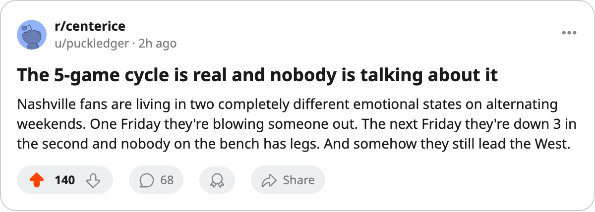

Numbers Game: Nashville Won Five, Lost Five, Won Five, and Now Leads the West
The Predators are riding a 5-game winning streak and sit 4 points ahead of Edmonton with both clubs inside a month of the regular season's end
 Ray CallumSenior correspondent · Home Ice Network
Ray CallumSenior correspondent · Home Ice Network Nashville Predators is on a 5-game winning streak and leads the Western Conference at 94 points. The gap between the two winning stretches is where this stands or falls.
Nashville Predators is on a 5-game winning streak and leads the Western Conference at 94 points. The gap between the two winning stretches is where this stands or falls.
This is what the last 15 games look like in five-game blocks: 5 wins, then 4 regulation losses and 1 overtime loss, then 5 wins again. The middle stretch produced a single point. The bookends produced 20. The Predators have been swinging between those two extremes on a roughly 2-week cycle all season, and the current cycle has them in first place.
On March 4, the desk noted Edmonton and Nashville were tied at 84 points with the Oilers holding the tiebreaker. Two weeks later, Nashville is 10 points further along and the gap is 4.  Edmonton Oilers sits at 90 with 12 games left; Nashville has 13. The Oilers have a game in hand and the edge in wins, but the Predators are on the right side of the swing right now, and the schedule gives them a chance to widen it on home ice.
Edmonton Oilers sits at 90 with 12 games left; Nashville has 13. The Oilers have a game in hand and the edge in wins, but the Predators are on the right side of the swing right now, and the schedule gives them a chance to widen it on home ice.
The infirmary is still thin
Nashville Predators has lost 331 days across 53 injury spells, sixth-most in the league.  Greg Johnson80, their 82-overall center, went down with a knee injury and will not return until March 27. Vernon Fiddler72 is out until May 12 with a groin. The Predators are missing two bodies from the middle six with 13 games left and the trade deadline 5 days away.
Greg Johnson80, their 82-overall center, went down with a knee injury and will not return until March 27. Vernon Fiddler72 is out until May 12 with a groin. The Predators are missing two bodies from the middle six with 13 games left and the trade deadline 5 days away.
The depth chart has held because  Tomas Vokoun90 has started 54 of 69 games. When the line shuffles have come in from the top, the goaltending has covered the difference.
Tomas Vokoun90 has started 54 of 69 games. When the line shuffles have come in from the top, the goaltending has covered the difference.
The next meeting
Edmonton visits Nashville on March 17. The Predators have won 5 straight and hold the top spot by 4 points over the Oilers, who have 12 games remaining. A regulation win pushes the gap to 6 with both clubs inside two weeks of March 20.
The pattern says the streak won't last forever. It is running right now, and that is the only cycle the standings count.
